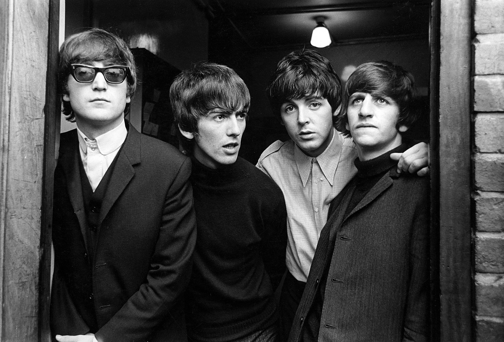

BLUES SANATÇILARI
Bessie Smith
15 Nisan 1894’te Tennessee’deki Chattanooga şehrinde dünyaya geldi.Küçük yaşta şarkı söylemye başladı.İlk Blues kadın şarkıcılarından,Ma Rainey adıyla tanınan Gertrude Pridgett'in(1886-1939) yardımıyla profosyonel şarkıcılığa başladı.Bir süre ABD'nin güney eyaletindeki bara ve klüplerde şarkı söyledikten sonra Columbia plak şirketinin temsilcisi piyanist ve besteci Clarence Williams tarafından keşfedildi.. 1923 yılında Donwhearted Blues adlı ilk plağını doldurdu. Plak bir anda sekiz yüz bin adet sattı.Ününün doruğuna ulaştığı 1924-1928 yılları arasında, aralarında L.Armstrong, F.Henderson, C.Hawkins, B.Goodman'in de bulunduğu ünlü müzikçiler eşliğinde yüz elliyi aşkın plak doldurdu ve "Blues İmparatoriçesi" adıyla ün yaptı.Smith,cazın temelini oluşturan zenci müziği blues'un en büyük yorumcularındandır.1928'den sonra alkolün etkisine giren şarkıcı, 1931'den sonra plak dolduramadı ve bir otomobil kazasında aldığı yaralar sonucu hayatını kaybetti.
Başlıca Yapıtları:Downhearted Blues,1923 Saint Louis Blues (L.Armstrong ile),1925 Nobody Knows You When Your Down and Out
Başlıca Yapıtları:Downhearted Blues,1923 Saint Louis Blues (L.Armstrong ile),1925 Nobody Knows You When Your Down and Out
Alexis Korner
Tam adı Alexis Andrew Nicholas Koerner'dir.1928 Paris doğumludur.Blues'a gönlünü Jimmy Yancey'in "Slow and Easy" si sayesinde kaptırdığını BBC'deki bir söyleşisinde dile getirmiştir. Paris'te askerliğini yaparken orada bulunan Ledbelly gibi Amerikalı bluescuları seyretmesi içindeki alevi körüklemiştir. 1950'lerde Skiffle diye tabir edilen cazın folk ile harmanlandığı tarz Britanya'da tekrar canlanınca Chris Barber'ın önderliğinde ve onun caz grubu ile mandolin çalarak sahnelere adım atmış oldu. İlk plağı 1954'de Ken Colyer's Jazzmen / Ken Colyer's Skiffle Group adı ile yayınlanan Back To The Delta albümüydü.Cyril Davis ile birlikte London Blues and Barrel Club klübünü işletmeye başlamıştır."İngiliz blues'in kurucu babası" olarak anılan bir İngiliz blues müzisyeni ve radyo yayıncısıydı.1960'ların ikinci yarısında müzisyenliğinin dışında bir çok dergiye blues makaleleri yazan müzisyen aynı zamanda BBC'ye çocuk programları, eğlence ve müzik programları da yapmaktaydı.Bir sigara tiryakisi olan Alexis Korner Colin Hodgkinson ile yeni albüm kayıtları sırasında fenalaşarak hastaneye kaldırıldı. 1 Ocak 1984'de akciğer kanserine bağlı beyin tümöründen öldüğünde 55 yaşındaydı.
Başlıca Yapıtları:A New Generation of Blues, 1968 The Party Album, 1980
Başlıca Yapıtları:A New Generation of Blues, 1968 The Party Album, 1980
KLASİK MÜZİK SANATÇILARI
Mozart
Wolfgang Amadeus Mozart, 27 Ocak 1756 yılında Avusturya'nın Salzburg kentinde doğmuştur. Babası Leopold Mozart, Salzburg Başpiskoposluğu Saray Orkestrası'nda keman çalan, bir çok besteler ve keman için bir metod yazan bir müzikçiydi. Mozart, henüz çocukken müzik dersleri almaya başladı. Hatta bu dönemde bazı eserler besteledi. Müzik otoriteleri Mozart'ın henüz çocukken bestelediği eserlerde bile müzikal dehasının izlerinin görüldüğünü belirtir.
Babası onun üstün kabiliyetini bütün dünyaya tanıtabilmek için Avrupa'nın baş kentlerinde uzun bir konser turnesine çıkardı. Mozart her gittiği yerde alkış topluyordu. Viyana'ya, Paris'e, Londra'ya gitti. Londra'dayken keman için 6 sonat besteledi. Ayrıca ilk senfonisini de tamamladı.1762 yılında, Bavyera Elektörlüğü'nün başkenti Münih'te, Bavyera Kurfüstü (Elektör prensi) lll. Maximillian' ın sarayında konser verdi. Aynı yıl Prag ve Viyana'da da imparatorluk saraylarında konser vermiştir. Konser turu, üç buçuk yıl sürmüştür. Viyana'ya 1767'de giden ikili, burada 1768 yılının kasım ayına kadar kalırlar. Bu gezi sırasında Mozart çiçek hastası olur. Sonradan iyileşmesi babası Leopold tarafından Tanrı'nın oğlu için sevgisini temsil etmektedir.Salzburg'da geçen bir yıl sonunda, üç kez İtalya'ya yolculuğa çıkmıştır. 1769 kasımından, 1771 martına kadar, 1771'in ağustosundan kasım ayına kadar ve 1772 ekimi 1773 martı arası dönemde Mozart, üç opera besteler: "Mitridate Rè di Ponto" (1770), "Ascanio in Alba" (1771) ve "Lucio Silla" (1772). Üç opera da Milan'da oynanmıştır.1787 yılında yaptığı besteler ile gereken başarıya ulaşamayan Mozart, giderek kötüleşen maddi durumu nedeni ile babası gibi Mozart ta, sarayda müzikçi olmuştur.Mozart'ın otuzaltı yaşını doldurmadan 5 Aralık 1791'de Viyana'da öldü.
Başlıca Yapıtları:Figaro’nun Düğünü Don Giovanni Jüpiter
Başlıca Yapıtları:Figaro’nun Düğünü Don Giovanni Jüpiter

Beethoven
Beethoven Ludwig Van, Bonn'da 1770 yılında doğdu.Küçük yaşta 1783 yılında saray orkestrası azalığına, 1785'te ikinci saray organistliğine getirildi. Bu görevleri kendisinin müzik sanat dünyası tarafından tanınmasını sağladı. Hocasının yardımı ile 1787 yılında Mozart'a talebe olmak için Viyana'ya gönderildi. Annesinin hastalığı sebebiyle Bonn'a döndü.Annesinin ölümünden sonra 1792'de Viyana'ya geri döndüğünde Mozart'ın ölmüş olduğunu öğrendi.1792 yılında Viyana'ya giden Beethoven klasik müziğin ünlü bestecisi Joseph Haydn'ın yanında çalışmaya başladı. Joseph Haydn kısa sürede Beethoven'ın üstün yeteneğini fark etti ve her konuda ona destek oldu. Beethoven, başlarda besteci olarak değil piyanist olarak adını duyurdu.İlk senfonisini 1800 yılında yapmıştır.Beethoven'ın dokuz senfonisi, beş piyano konçertosu, bir keman konçertosu, bir piyano, keman ve çello için üçlü konçerto, otuz iki piyano sonatı ve birçok oda müziği eseri bulunmaktadır 9. senfoni en çok bilinen ve bugün Avrupa Birliği marşı da olan en çarpıcı senfonisidir.
Op. 109 piyano sonatıyla Klasik müziğin Romantik Dönemini başlatmıştır.Yaşamı boyunca sağlık problemleri çeken Beethoven 1801'de işitme problemleri yaşamaya başlamış ve 1817'de tamamen sağır olmuştur. Bu dönemden sonra sağırlığı müzik yaşamını hiçbir şekilde etkilememiştir. 9. senfoniyi sağırlık döneminde bestelemiştir.
1827 yılında 56 yaşındayken dünyaca tanınan bir besteci olarak siroz hastalığı nedeniyle vefat etmiştir ve cenazesine otuz bine yakın insan katılmıştır.
HALK(COUNTRY FOLK) MÜZİK SANATÇILARI
Johnny Cash
Johnny Cash, 1932 yılında Kingsland, Arkansas’da doğdu.Radyonun hep dinlendiği bir evde müzik içinde büyüyen Cash, lisede gitar çalmaya ve şarkı söylemeye başladı. Cash uzun yıllar Amerikan ordusunda görev yapmıştı. Askerlik görevinin sonunda Vivian Liberto ile 7 Ağustos 1954’te evlendi. Aynı yılın sonlarında Cash, gitarist Luther Perkins ve bas gitarist Marshall Grant ile çalmaya başladı. Sun Records firmasına Johnny Cash ve Tennesse İkilisi olarak kilise şarkıları çaldılar ancak firma yetkilileri onlara kendi besteleriyle gelmelerini söyledi. Cash, 1955’te "Hey Porter", "Cry Cry Cry" şarkılarını kaydetti ve şarkılar country listelerine girdi. "I Walk The Line" şarkısı Cash’in country listelerinde bir numara olan ilk şarkısı olmuş ve pop listelerinde de ilk yirmiye girmişti. Bu şarkıların başarısı sayesinde Cash ilk albümünü Sun Records’tan çıkardı. 1958’te Cash daha büyük bir firma olan Columbia Records ile anlaştı. Bu firmadan "Don’t take Your Guns to the Ground" adlı hit şarkıyı çıkardı. Bu yıllarda daha sonra eşi olacak June Carter’ın yazdığı "Ring of Fire" şarkısı country listelerinde bir numara oldu. Daha sonraki yıllarda Cash’in davranışları uyuşturucu etkisiyle daha kötüye gitti. Sanatçı 1968’deki "Johnny Cash at Folsom Prison" konseri ile müziğe başarılı bir dönüş gerçekleştirdi. Bu konser albümünden çıkan "A Boy Named Sue" yine country listelerinde bir numara kadar çıktı ve bu konser albümü, tüm zamanların en önemli konser albümlerinden biri olarak nitelendirildi.1971’de Cash kendini anlatan "Man in Black" şarkısı ile başarı kazandı. 1975’te Cash ilk otobiyografisi olan "Man in Black" kitabını yayınladı. 1980’de Cash "Country Music Hall of Fame"e adını yazdıran en genç country sanatçısı oldu.1985’te birkaç önemli country müzisyeni ile The Highwaymen grubunu kurdu ve ilk albümleri "Highwayman", adlı şarkısı ile büyük bir başarı kazandı. Cash, 5 temmuz 2003’te son konserini verdi.Johnny Cash 12 Eylül 2003’te hayatını kaybetti.
Iron and Wine
26 Temmuz 1974 yılında Chapin, Güney Carolina, ABD de doğmuştur.
Samuel "Sam" Ervin Beam, daha iyi sahnesi ve kayıt adı Iron and Wine ile tanınıyor, Amerikalı bir şarkıcı-söz yazarı. Altı stüdyo albümü, birkaç EP ve single'ın yanı sıra canlı bir albüm içeren birkaç indirmeli albüm çıkardı.Miami'de yerel bir lisede sinema öğretmenliği yapmaktadır. 2002 yılında ilk albümü The Creek Drank The Cradle'ı çıkardığında yumuşak tonları, insanın içine işleyen sesi, huzur veren melodileriyle beklediğinden yoğun bir ilgi görmüştür. Kayıtlarının çoğunu evde gerçekleştirmektedir. Bir yıl sonra 2003 eylül ayında 5 şarkılık bir ep çıkarmıştır adı Creek Drank The Cradle As The Sea And The Rythm'dir. Daha sonra Holopaw, Broadcast, The Shins, Ugly Casanova, The Decemberists, Fruit Bats gibi gruplarla turnelere çıkarak adını daha kalabalık kitlelere duyurma fırsatı bulmuştur. İkinci albümü Our Endless Numbered Days’le kulaklara çalınmaya başlayan, özellikle 2007’de çıkardığı üçüncü albümü The Shepard’s Dog ile genişçe bir üne kavuşan Iron and Wine, 90’ların ikonik plak şirketi Sub Pop’un yeni dönem bayraktarlarından.Iron and Wine Kuzey Amerika folk müziğinin naifliğini neredeyse paganik denebilecek şarkı sözleri ve mistik tex-mex eklentileriyle süslüyor.
ELEKTRONİK MÜZİK SANATÇILARI
Skrillex
Skrillex, Sonny John Moore ismiyle 15 Ocak 1988 yılında Los Angeles’ta doğdu.Kendisinin en büyük müzikal tutkusu ve elektronik müziğe yönelmesini sağlayan Warp Records ve bünyesindeki müzisyenlerdir. Özellikle Aphex Twin ve Squarepusher‘dan etkilenmiş ve elektronik müziği sevmesinde büyük etkileri olmuştur.Skrillex mahlasından önce ‘Twipz‘ ismiyle ilk demosunu yapmıştır. Orijinal olarak ilk resmi çalışması ise 2009 yılında kendi ismi Sonny ile Gypsyhook kısaçalarını yayınlamıştır.7 Haziran 2010′da ”My name is Skrillex” albümünü ücretsiz sunmuştur.Asıl çıkışını Benny Benassi‘nin Cinema şarkısına yaptığı remix ile yapmıştır. Bu remix kendisinin 54’üncü Grammy Ödülleri’nde En İyi Remix ödülünü kucaklamasını sağlamıştır.Skrillex kariyeri dışında Boys Noize ile Dog Blood ve Diplo ile de Jack Ü projeleriyle müzik üretimlerini çeşitlendirip, çalışmalarına tam gaz devam ediyor.
Eric Prydz
19 Temmuz 1976 da Täby, İsveç de doğmuştur. Tam adı Eric Sheridan Prydz dır.Los Angeles ta yaşamaktadır. 9 yaşında müzik yapmaya başlamıştır.Eric Sheridan Prydz, takma adı Pryda ve Cirez D olarak ta bilinir. İsveçli bir DJ, plak yapımcısı ve müzisyendir. 2004 hit single'ı "Call on Me" ile ün kazandı ve 2007'de "Proper Education" ve 2008'de "Pjanoo" ile devam eden grafik başarısını yakalamıştır. 2016'da ilk stüdyo albümü Opus'u çıkarmıştır.Call On Me şarkısına çektiği kliple gelmiş geçmiş en çarpıcı klipler sıralamasında ilk 10 a girmeyi başarmıştır.
HİP-HOP MÜZİK SANATÇILARI
2Pac
Tupac Amaru Shakur, 16 Haziran 1971 tarihinde Amerika Birleşik Devletleri'nin New York şehrinde doğdu. Digital Underground adlı müzik grubuna katılan Tupac, kariyerinin ilk yıllarında sahne elemanı ve arka plan dansçısı olarak görev yaptı. Ardından da MC'liğe geçiş yaptı ve ilk resmi şarkısı Same Song'u seslendirdi. Grup başarılı oldu ve 2Pacalypse Now adlı ilk albümünü piyasaya sürdü. Albüm satışları çok başarılı olmasa da bazı şarkıları başarılı ve etkiliydi.Bir süre de etkileyici rol yeteneği sayesinde filmlerde oynayan Tupac, "Juice" adlı filmde rol aldı ve 1993 yılında ikinci albümü Strictly 4 My N.I.G.G.A.Z.'ı çıkardı. Bir öncekine göre daha başarılı olan bu albüm, onun isminin duyulmasını da sağladı.14 Şubat 1995'te hapse girdi ve hapisteyken Me Against the World albümünü çıkardı. Bu albüm Tupac'ın o güne kadar ki en iyi albümüydü. Listelerde 4 hafta bir numara olarak kaldı.Hapisteki 11. ayından sonra Death Row Records'un sahibi Suge Knight tarafından ödenen kefaletle serbest bırakıldı. Tupac ile yapılan anlaşma neticesinde Suge Knight'ın ödeyeceği kefalete karşılık Tupac şirket adına üç albüm çıkaracaktı.Kefaletle serbest bırakılmasının ardından Tupac albüm için şarkılarını yapmaya başladı. Albüm çok başarılı oldu ve günümüze kadar tam 9 milyon sattı. Yüzlerce şarkı kaydeden Tupac'in şarkıları, çoğu öldükten sonra çıkan albümlerinde kullanıldı.13 Eylül 1996 tarihinde saat 16:03'de hayata veda etti.

Eminem
Gerçek adı Marshall Mathers olan Eminem, 17 Ekim 1972’de ABD’nin Kansas City eyaletinde dünyaya geldi. 14 yaşında sahneye çıkmaya başladı ve Motor City ikilisi Soul Intent'in bir üyesi olarak ün saldı. İlk solo albümünü 1996'da bağımsız plak şirketi Infinite'den çıkardı.Infinite'e gelen tepkilerden büyük bir hayal kırıklığına uğrayan Eminem, daha sonra “Slim Shady EP” adını alacak albüm üzerinde çalışmaya başladı. Yerel müzik endüstrisindeki kişilikler ve hayatın içindeki sahtekarlıklar hakkında bir çok yıkıcı söz ürettikten sonra hip-hop'un zor beğenen alemine girmesini sağlayacak müziğe ulaştı.Artık albümleri hip hop dünyasında bomba etkisi yaratmıştı. Eminem'in sadece kendine özgü rap stil değil, derisinin rengi de ilgi çekmişti; artık o rap müziğin 'yeni beyaz' umuduydu. 1997'de Los Angeles'te düzenlenen Rap Olimpiyatları'nda ikinci sırayı aldı.Slim Shady albümü 1999'da "My name Is" parçasının yarattığı büyük gürültü eşliğinde piyasaya çıktı. Albüm bir yıl içinde üç kez platin plak kazandı.2000’in yazında çıkan "The Marshall Mathers LP", Eminem'in hem ününü, hem aldığı tepkileri perçinledi.Eminem, 2002 yılının Haziran ayında dördüncü albümü “Eminem Show”u piyasaya sürdü. 1999'da en iyi solo rap dalında ve en iyi rap albümü dalında iki Grammy ödülü kazandı. 2001’de buna üç Grammy daha ekledi.Çevirdiği "8 Mil" filminde kendi hayatını oynamasına ve filmin başarılı olmasına rağmen, oyunculuktan zevk almadığını söyleyen Eminem, başkasının koyduğu kurallara uymak zorunda kaldığını söyledi ve film setini hapishaneye benzetti. Ünlü rapçi,“8 Mile” filmi için yapılan 'Lose Yourself' şarkısıyla, 2003 yılında gerçekleştirilen 75. Akademi Ödüllerinde 'En İyi Şarkı' Oscarının sahibi oldu.Eminem birçok şarkıda kızına olan sevgisini dile getirmiştir. Bunlar arasında özellikle "'97 Bonnie and Clyde", "Hailie's Song", "My Dad's Gone Crazy", "Mockingbird", "Forgot About Dre", "Cleanin' Out My Closet", "When I'm Gone" ve "Beautiful" adlı şarkılar gösterilebilir.
CAZ MÜZİK SANATÇILARI
Nicholas Payton
Nicholas Payton, Black American multi-enstrümantalisti, 26 Eylül 1973'te New Orleans, Louisiana, ABD'de doğdu. Bas gitarist Walter Payton'ın oğlu.Dört yaşlarında trompet çalmaya başladı.Genç Payton'ın dönüm noktası on yaşında Ailesinin rekorunda olan bir Miles Davis dörtlü albümü duyduğunda gerçekleşti
Caz cenaze törenlerinden düğünlere, bar mitzvalara kadar her yerde çalışarak halka açık gösterilere başladı ve hatta bahşiş için sokaklarda çaldı.Yıllar geçtikçe, Payton Wynton Marsalis, Dr. Michael White, Christian McBride, Joshua Redman, Roy Hargrove, Doc Cheatham ve Joe Henderson ile sahne aldı.1997'de trompetçi Doc Cheatham ile ortak albümü Grammy aldı.2011 yılında, 21 parçalı Televizyon Stüdyosu Orkestrası adlı bir büyük grup topluluğunu kurdu.
Ayrıca 2011'de, tüm müziği kendisinin yazdığı bir aşk hikayesi olan Bitches'i yayınladı.Payton kışkırtıcı yazılarada sahiptir.
Bugüne kadarki en göze çarpan eserlerinden biri olan "Neden Caz artık havalı değil" kültürel sömürgeciliğin müzik üzerindeki etkilerini anlatmıştır.150.000 sayfalık sayfa görüntülemesini hızlı bir şekilde kazanmış ve uluslararası basının dikkatini çekmeye ve tartışmaya yol açmıştır.
Dizzy Gillespie
21 Ekim 1917 tarihinde, Cheraw, Güney Carolina, A.B.D.’de dünyaya geldi.James ve Lottie Gillespie çiftinin dokuz çocuğunun en küçüğü olan Dizzy, müzisyen olan babası sayesinde henüz dört yaşındayken piyano çalabilmekteydi. Babasının henüz kendisi on yaşındayken gerçekleşen zamansız vefatının ardından tek başına kalan Gillespie, 12 yaşındayken kendi kendisine uğraşarak trompet ve de trambolin çalmayı öğrendi.1935 yılında profesyonel olarak müzik kariyerine başlayan Gillespie’nin ilk yer aldığı grup, Frank Fairfax Orchestra oldu. 1937 yılında Teddy Hill’in orkestrasına katılank albümü olan King Porrter Stomp’u kaydetti.Modern cazın ilk stili olan Bebop, 1940’lı yılların başında ortaya çıktı ve de bu tarzın gelişmesine en büyük katkıda bulunan isimlerden birisi ile Dizzy Gillespie idi. Charlie Parker ile beraber modern cazın altyapısını oluşturan Gillespie dönemin pek çok büyük isminin (Miles Davis, Max Roach vs) kariyerinde eğitmen ve yol gösterici olarak büyük bir rol oynadı.
1945 yılında dönemin pek çok büyük ismini kendi yanına çekmeyi başararak büyük bir orkestra kuran Gillespie, üç yıla yakın bir süre boyunca bu orkestrayla beraber sahne aldı.Gillespie ayrıca 1940’lı yılların sonlarında Küba ve Afro-Latin elementleri caz müziği ile birleştirerek Afro-Cuban Caz türünün doğmasına yol açtı.Hayatının ilerleyen dönemlerinde bebop türünün kökenlerine geri dönen Gillespie, 1960 yılında Down Beat dergisi tarafından Jazz Hall of Fame’e kabul edildi ve 1979 tarihinde To Be or Not to Bop adlı otobiyografisini yayınladı.Dizzy Gillespie, uzun bir hastalık sürecinin ardından, 6 Ocak 1993 tarihinde, pankreas kanseri sonucunda hayata veda etti.
POP MÜZİK SANATÇILARI
Modonna
16 Ağustos 1958'de Bay City, Michigan'da dünyaya geldi.Çocukluğunda baleye büyük ilgi duyan Madonna, babasından kurslara gitmek için izin aldığında, aslında dolaylı olarak show dünyasına ilk adımını atmış oldu.Ülkenin en iyi dansçı ve koreograflarından Martha Graham ve Pearl Lang'le çalışma fırsatı bulduktan sonra aralarında Alvin Ailey, Walter Nicks'in ekipleri de olan dans şirketlerinde performans gösterdi.1979'da Fransız dansçı Patrick Hernandez'in ekibinde dünya turnesine çıkan Madonna müzisyen Dan Gilroy'la tanıştı. Gilroy, Madonna'nın daha sonraları ilk şarkıcılık tecrübesini yapacağı rock grubu Breakfast Club'le yolunun kesişmesine neden oldu. 1980'de erkek arkadaşı Stephen Bray'in de yer aldığı ikinci grubu Emmy'de söylemeye başladı. Bray'le dans şarkıları yazıp bestelediler ve ikili performanslarıyla New York diskolarında boy gösterdi. Müzik dünyasındaki bu ilk önemli deneyimler DJ ve prodüktör Mark Kamins'in de ilgisini çekti, duyduğu sesten çok etkilenince, demoyu Seymour Stein'in kuruculuğunu yaptı Sire Records'a ulaştırdı.Madonna, 1982 yılında, yaptığı her single için 5 bin dolar almak üzere, resmi olarak Sire Records'la anlaştı. Yayınlanan ilk single'ı "Everybody" Billboard Hot Dance/Club Chart'ta üst sıralara yerleşirken, Billboard Hot 100 için beklenen sonucu getirmedi 1983'te yayınlanan "Burning Up" ve "Physical Attraction"dan oluşan ikinci single çalışması, şarkıcının dans listelerinde büyük başarı kazanmasını sağladı ve Sire Records'ı bir albüm yapmak için harekete geçirdi.İlk albüm kendi adını taşıyordu: Madonna. En iyi albümler listesinde 8 numaraya kadar çıkan, "Holiday," "Borderline," ve "Lucky Star" single'ları yılın en sevilen çalışmaları arasında yer alan albüm, tüm dünyada 3 milyondan fazla sattı.1984'te "Madonna" albümünü takip eden ikinci albüm çalışması "Like A Virgin", uluslararası bir başarının kapılarını açtı. Albümle aynı adı taşıyan ilk single "Like A Virgin", Billboard Hot 100 Singles listesinde 6 hafta süreyle bir numarada kaldı. Albümün çıkış tarihinin hemen ardından gelen 20 milyonluk satışı, sonraları tüm dünyada 17 milyon kopyanın daha satmasıyla 37 milyon olacaktı.Marilyn Monroe'nun "Diamonds are Girls Best Friend"'deki performansına adanan Material Girl'ün listelerdeki büyük başarısından sonra Beastie Boys'la dünya turnesine çıkan şarkıcının, albümden çıkan üçüncü 45'liği "Crazy For You" bir numaraya yerleşen ikinci single'ı oldu.1986 yılı Madonna'nın müzikal kariyerini çok daha iyi bir noktaya taşıyacak prodüktör Patrick Leonard 'la tanıştığı yıldı. Birlikte hazırladıkları üçüncü debut albümü "True Blue", diğer albümlerine göre daha olgun bir içeriğe ve müzikaliteye sahipti ve dünya çapında 21 milyondan fazla sattı. Daha sonraları yayınlayacağı "The Immaculate Collection"'dan sonra en fazla satan Madonna albümü "True Blue" olacaktı. Albümden sırasıyla Live To Tell, Papa Don't Preach, Open Your Heart, True Blue ve La isla Bonita gibi hitler çıktı ve ilk 3 45'lik Amerika listelerinde bir numara oldu.1989'da Madonna diskografisinde oldukça önemli olacak yeni albümü "Like A Prayer"ı yayınladı.1994'te altıncı stüdyo albümü Bedtime Stories geldi.Albüm Avrupa ve Avustralya'da büyük ilgi görmesi dışında en iyi pop albümü dalında Grammy adaylığı da kazandı. Babyface tarafından aranjesi yapılan ve Björk'ün sözlerinin bir kısmını yazdığı single "Take A Bow", Billboard Hot 100'de art arda 7 hafta boyunca bir numarada kaldı. 7 Kasım 1995'te Madonna balladlarından oluşan yeni albümü Something To Remember'ı çıkardı. Albümde 3 yeni şarkı da bulunuyordu. Marvin Gaye klasiği "I Want You", albüm için Massive Attack'la yeniden düzenlendi ve "You'll See" single'ı uzun süre listelerde kalmayı başardı.1998'de yedinci stüdyo albümü Ray Of Light raflardaydı.Albümden çıkan Frozen, Avrupa listelerinde bir numara oldu ve albüm 1999 Grammy törenlerinde 4 dalda ödül aldı.2000 yılında ayrıca sekizinci stüdyo albümü Music'i de yayınlayan Madonna, dans, pop ve house müziklerini party ruhu taşıyan bir soundda birleştiriyordu. Like A Prayer'dan sonra Amerika albüm listelerinde bir numara olan ikinci Madonna albümü özelliğini taşıyan Music'ten, "Don't Tell Me" ve "Gone" gibi uluslararası hitler de çıktı.2001'de başarılı konserlerle geçen Drowned World Tour'a çıktı.2002'de yeni James Bond filmi için yazdığı Die Another Day isimli 45'likle Golden Globe ödülü alırken, Golden Raspberry ise şarkıyı yılın en kötüsü seçti.Rolling Stone dergisinin tüm zamanların en iyi 100 artisti listesinde 36. oldu.

Tarkan
17 Ekim 1972'de Almanya'nın Frankfurt kenti yakınlarındaki Alzey'de dünyaya geldi. Tarkan pop müzik ile ilgili eserler yapmak istiyordu, bunun için ilk önce daha zor olan Türk sanat müziği eğitimi almayı düşünerek sesini daha da geliştirdi.Lise bitiminde, istediği üniversite bölümünü kazanamaması üzerine Almanya'ya gitme planları yaptığı sırada İstanbul Plak şirketinin sahibi Mehmet Söğütoğlu ile tanıştı ve bir albüm anlaşması imzaladı.Tarkan'ın bestesini yaptığı, Alpay'ın sözlerini yazdığı şarkılarla beraber sekiz ay içerisinde 15 parça hazırladılar ve Aralık 1992'de piyasaya çıkan "Yine Sensiz" adlı ilk albümü, özellikle "Kıl Oldum Abi" adlı parçasıyla tutulup 700 bin adet sattı. İkinci albümü Mayıs 1994'te çıktı. Sezen Aksu destekli "A acayipsin" adlı çalışması ile popülaritesini artırdı.2003 yılındaysa "Dudu" adlı albümü Rusya'da 900 binden fazla satış rakamına ulaştı. Bu hızla çıkışı aynı zamanda reklam tekliflerini de beraberinde getirdi. 2001'de Pepsi, 2004 Opet, 2006 Avea olmak üzere daha birçok reklam şirketinin marka yüzü oldu.Tarkan, 2014 yılında Harbiye Açıkhava Sahnesi'nde tam 9 gün boyunca verdiği konserlerle 2014 yılına damga vuran bir rekora imza attı. "Kayahan'ın En İyileri 1" albümünde seslendirdiği "Yemin Ettim" şarkısını da ilk kez bu konserlerde seslendirdi ve sonrasında bu konser görüntülerinden bir de video hazırladı.Tarkan, 2005 yılında "Ayrılık Zor" adlı bir single yayımladı; 2006 yılı başında "Bounce" şarkısını single olarak Avrupa'da satışa sundu.Nisan 2006'ya gelindiğinde uzun süren çalışmalar sonucunda hazırlanan ilk İngilizce Tarkan stüdyo albümü Come Closer, 7 Nisan 2006'da piyasaya sürüldü, toplamda 15 şarkıya yer verildi. Albüm, Almanya Albüm Listesi'nde 18, İsviçre Albüm Listesi'nde 43, Avusturya Albüm Listesi'nde 50 numaraya kadar yükseldi; Türkiye'deki satış rakamı 110.000 olarak açıklandı. Albümün ikinci single'ı "Start the Fire", Ağustos 2006'da yayımlandı.
11 Mart 2016 tarihinde Tarkan'ın dokuzuncu stüdyo albümü olan "Ahde Vefa" piyasaya sürüldü. Hitt Müzik etiketiyle yayımlanan albümün dağıtımını ise DMC yaptı. "Ahde Vefa" Tarkan'ın yaptığı ilk sanat müziği albümüdür. Albüm ilk haftasında 170 bin satış rakamına ulaştı.
14 Temmuz 2016'da "Cuppa" single'ını yayımladı. 43. Altın Kelebek Ödülleri'nde Ahde Vefâ ile Türk Sanat Müziği'ne katkılarından dolayı En İyi Proje ödül aldı.[46] Tarkan, 15 Haziran 2017 de yeni albümü "10"u DMC Müzik'ten yayınladı. Sanatçı, 14 şarkının yer aldığı albümden ilk klibini sözleri kendisine, müziği Ozan Çolakoğlu'na ait "Yolla" adlı şarkıya çekti.
ROCK MÜZİK SANATÇILARI
The Beatles
The Beatles, Birleşik Krallık'ın Liverpool kentinde kurulmuş müzik grubudur.
John Lennon 1950'lerde Elvis Presley gibi sanatçılar sayesinde Rock 'N Roll'la ilgilenmeye başlamıştı. Sanatçı arkadaşı Pete Shotton ile birlikte 1956'de The Quarrymen adlı bir grup kurar. Daha sonra gruba Bill Smith katılır. Gruptaki elemanlar enstrümanlarında yetersiz oldukları için sürekli değişmektedir. 6 Temmuz 1957'de bir partide John Lennon, Paul McCartney ile tanışır.
Kısa süre sonra Lennon'dan gruba katılması için teklif alır ve bunu kabul eder. Grupta eleman değişiklikleri devam ederken 1958'de gruba genç gitarist George Harrison katılır. Grup 1958'de bir deneme kaydeder. Demoda That'll Be the Day adlı bir cover parça, bir tane de McCartney / Harrison bestesi In Spite of All the Danger vardır. Amerika'ya döndüklerinde The Beatles adındaki The White Album olarak da bilinen albüm için çalışmalara başladılar. Ancak bu çalışmalar yanında birçok kavga getiriyordu. Ringo Starr 4 şarkının kayıtlarına girmedi ve Paul McCartney onun yerini doldurdu. 1966'da tanışan ikili 1968'de çıkarttıkları Unfinished Music #1: Two Virgins albümünden sonra birbirlerinden hiç kopmamaya başlamıştı.İki disklik bu albüm de ötekileri kadar büyük bir ilgiyle karşılandı. Bu albümün diğerlerinden farkı, grubun her üyesinin kendine has tarzlarını kendi şarkılarında yansıtmaları oldu. Rolling Stone, albümü "Bir çatı altında 4 solo albüm" olarak tanımladı. Albüm sonrası grup hiç birlikte röportaj vermeyip, televizyona çıkmamaya başladı.
Üyeler: John Lennon (gitar, vokal): 1960 - 1970
Paul McCartney (bas gitar,piyano, vokal): 1960 - 1970
George Harrison (gitar, vokal): 1960 - 1970
Ringo Starr (bateri, vokal): 1962 - 1970
Üyeler: John Lennon (gitar, vokal): 1960 - 1970
Paul McCartney (bas gitar,piyano, vokal): 1960 - 1970
George Harrison (gitar, vokal): 1960 - 1970
Ringo Starr (bateri, vokal): 1962 - 1970
Nirvana
Nirvana, ABD'li rock grubu. Gitar ve vokalde Kurt Cobain, bas gitarda Krist Novoselic ve bateride Dave Grohl bulunmaktadır.
Sub Pop tarafından keşfedilen grup 1988 yılında ilk singleları Love Buzz/Big Cheese'i kaydetti.
1989 yılında çıkardığı ilk albümle Bleach sesini pek duyurmayan grup, 1991 yılında çıkardığı Nevermind albümü ile müzik dünyasında tam anlamıyla bir çığır açtı. Nevermind Albümün ilk single'ı Smells Like Teen Spirit ilk çıktığı yıllarda dev bir hayranlık kitlesi oluşturdu ve kısa zamanlarda dünyanın en iyi şarkılarından biri haline geldi.1991 Avrupa Turnesi boyunca Nirvana, Sonic Youth'un ön grubu oldu.4/4'lük ritm kalıplarıyla, yalın fakat akılda yer tutan melodileriyle ve vurucu sözleriyle kendine özgün bir tarz oluşturan solist Kurt Cobain, aynı zamanda çalkantılı yaşamı ve uyuşturucu bağımlılığı ile de gündeme gelmiştir. Grup daha sonra Geffen Records'la anlaşma imzaladı ve asıl büyük başarıları olan 'Nevermind'ı 1991 yılının sonbaharında piyasaya çıkardı. 3 platin ödüle layık görülen ve dünya çapında 10 milyon kopya satan Nevermind'dan çıkan single "Smells Like Teen Spirit" ise MTV'nin sürekli yayınladığı kliplerden biri oldu. Ayrıca bu şarkı gelmiş geçmiş en iyi şarkılar arasında dokuzuncu olmuştur ve son 25 yılın en iyi şarkısı seçilmiştir.1993 yılının baharında grup tekrar stüdyoya girmek için hazırdı. Nevermind'ın ardından çıkartacakları bu yeni albüm için grup; Pixies, Breeders ve Jesus Lizard'ın da prodüktörlüğünü yapmış olan Steve Albini'yle çalışmayı tercih etti. Yeni albüm In Utero 1993 yılının Eylül ayında piyasaya çıktı. 1994 yılında Kurt Cobain'in ölümüyle grup dağılmıştır.
ENSTRÜMANTAL MÜZİK SANATÇILARI
Yann Tiersen
23 Haziran 1970’te Brest, Brittany, Fransa’da dünyaya geldi. Müzikle küçük yaşlarındayken ilgilenmeye başlayan Tiersen, Rennes, Nantes ve Boulogne gibi birkaç akademide klasik müzik eğitimi aldı.Yann Tiersen, ilk albümü “La Valse Des Monstres“ı 1995 yılında yayınladı. Ardından “Rue Des Cascades” (1996) ve dünya çapında tanınmasını sağlayan “Le Phare” (1998) albümleri geldi. Çıkardığı “Tout Est Calme” (1999) ve “L’absente“ın (2001) albümleriyle Fransa’da hatrı sayılır bir başarı elde eden Tiersen, 2001 yılında yönetmen Jean Pierre Jeunet’ten teklif aldı. Jeunet, filmi Le fabuleux destin d’Amélie Poulain için onunla çalışmak istemişti ve bu Tiersen için gerçek bir şans oldu. Çünkü filmin ulaştığı uluslararası izleyici kitlesinde ve kazandığı başarıda müziklerinin de payı olmuştu ve akordion, mızıka, piyano ve viyolinle yaptığı bu lirik ve dokunaklı besteler filme çok yakışmıştı. “Amelie”, 2002 yılında Yann Tiersen’e ‘En İyi Film Müziği’ dalında César ödülünü kazandırdı. Ayrıca aynı yıl Dünya Film Müzikleri Ödülleri‘nde (WSA) Yann Tiersen ‘Yılın En İyi Orjinal Film Müziği’ ödülünün de sahibi oldu.Dünyanın dört bir yanında verdiği konserlerin ardından Yann Tiersen, 2004 yılında Goodbye Lenin filminin müziklerini yazdı. Ödül geleneği bu filmde de devam etti. Yann, bu defa da Alman Film Ödülleri‘nde onurlandırılmıştı. Aynı yıl şarkıcı Shannon Wright’la ortak müzikal çalışmalar içine girdi.Fransa’nın en büyük müzik dehaları arasında gösterilen Tiersen, birçok farklı enstrümanı kullanarak deneysel ve minimalist bir tarz oluşturmuştur. Hem geleneksel hem de yenilikçi olarak adlandırılan müziğinde kullandığı avangart dokunuşlarla, folkla pop arasında gidip gelen zaman zaman da rock soundlarıyla zenginleşen bir stil ortaya koymuştur.
Yanni
Yanni Chrysomallis, 14 Kasım 1954’te Yunanistan’da doğmuştur.Küçük yaşlarda dinleyerek büyüdüğü Beethoven, Mozart, Chopin, Stravinsky, Debussy gibi klasik müzik bestecilerinin etkisinde kalan Yanni ileriki yaşlarında yaptığı bestelerinde, gene kendi deyişiyle “Müziklerinde tek bir kelime dahi etmeden insanlarla iletişim kurmayı başarabilen bu müzisyenler”in yapabildiğini başarmayı amaçlamıştır.Müzik kariyerine 1984 yılında çıkardığı Optimystique albümüyle başladı.Stüdyo albümlerinin yanında konser albümleri de bulunan sanatçının piyanoyla yaptığı bestelerinin, dinleyicisi için apayrı bir yeri olsa da enstrümantal soloları ön plana çıkartarak süslediği konserlerinde çok sesli performanslarıyla dünya çapında beğeni topladı. 1954 doğumlu olan piyanistin müzikal kariyerinde bir dönüm noktası olan "Dare to Dream" albümü ona Grammy ödülü kazandırdı ve bir yıl sonra çıkardığı "Yanni Live at the Acropolis" konserinin kayıtlarından oluşan albümü de tüm zamanların en çok satan ikinci konser albümü ünvanını alarak gelmiş geçmiş en iyi canlı performanslardan biri olarak değerlendirildi.Ortadoğu müzikleri ve ritmlerini de müziğinde kullanan ve Steal the Sky (1988), Heart of Midnight (1988), I Love You Perfect (1990) gibi filmlerin müziklerini yapmıştır.New age alanında, zaman içinde ürettiği enstrumantal müziklerle, dünya çapında tanınan ve sevilen bir müzisyen olmayı başardı.